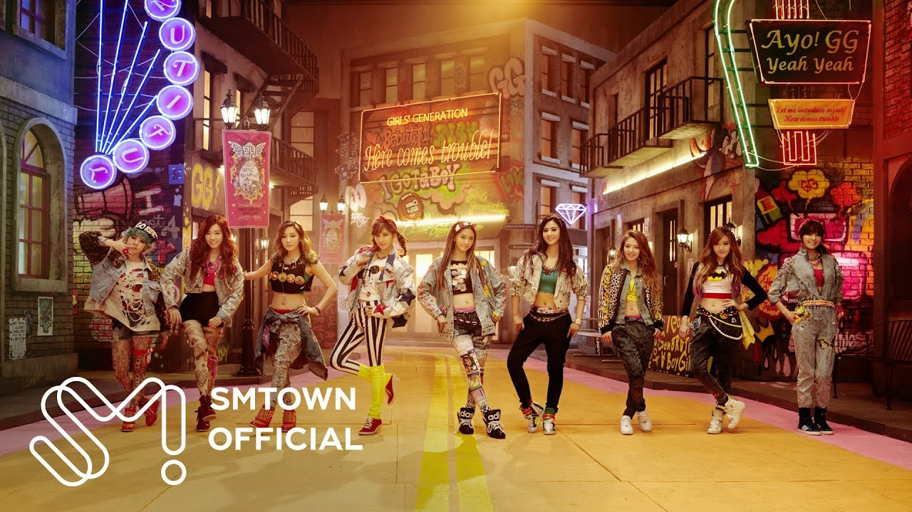

KPOP
VIDEOS

Aunque la música es importante, el K-pop es
también un género muy visual. Los vídeos de
pop coreano están impecablemente coreografiados,
con una producción cuidadísima que tiene como
objetivo dar protagonismo a los miembros más
populares del grupo. El vídeo I got a boy, de Girls
Generation, fue el Mejor vídeo de YouTube de 2013,
batiendo a otras superestrellas internacionales,
como Lady Gaga.